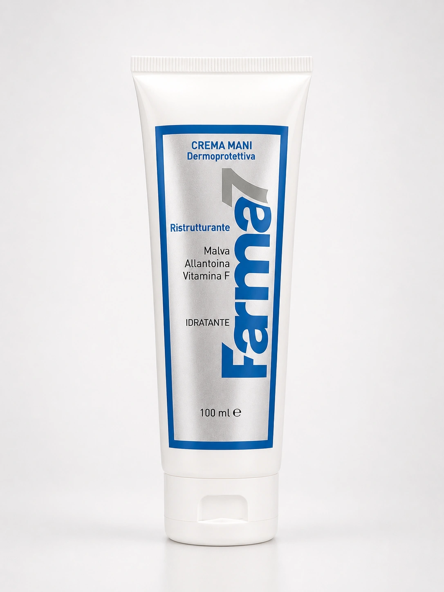

CREMA MANI (MALVA)
Capacità
50 ml
Utilizzo
Idrata e protegge le mani secche e screpolate; assorbimento rapido, non unge.
Ingredienti principali
Acqua/water, Glycerin, Eleais guineensis oil, Hydrogenated lanolin, Cetearyl alcohol, Ceteareth-3, Tristearin, Propylene glycol, Malva silvestris extract, Dimethicone, Ethyl linoleate, Allantoin, Sodium dehydroacetate, Sodium benzoate, 2 Bromo 2 Nitro propan 1, 3 Diol, Citric acid, Parfum.